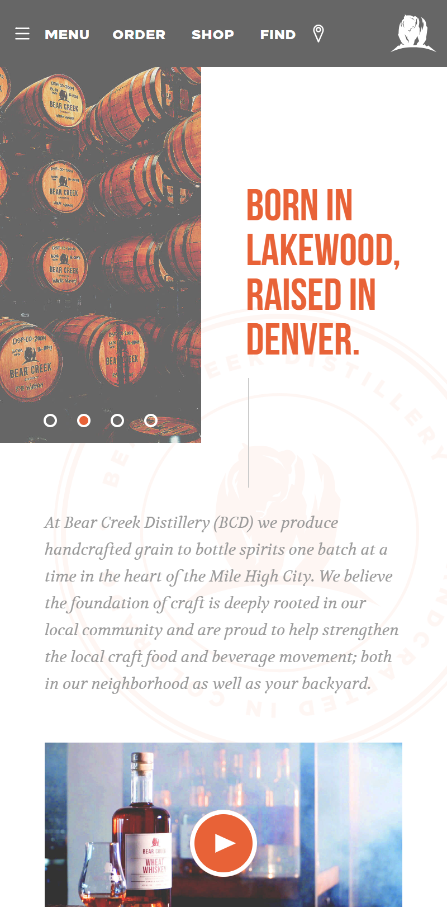
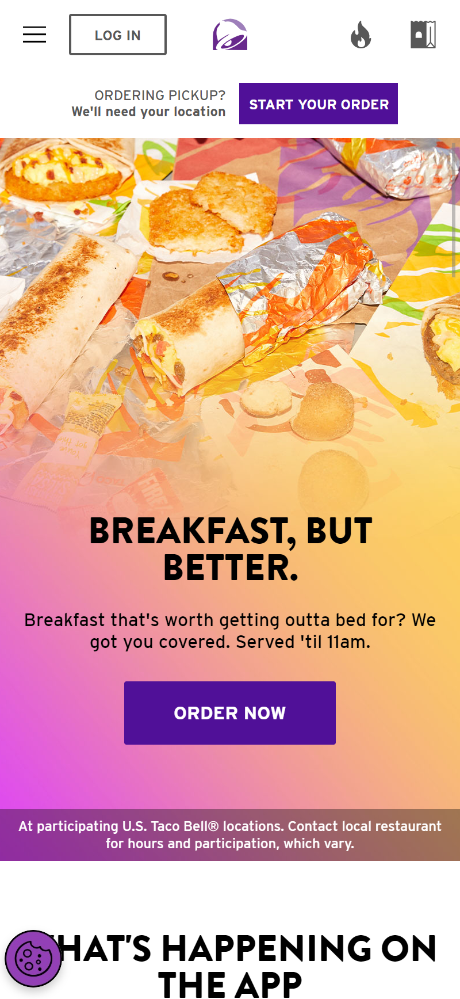

White Space and Clean Design
Bear Creek Distillery
bearcreekdistillery.com
You can see how well Bear Creek Distillery uses white space to show off their pictures and create a nice clean looking page
Rule of Thirds
Houzz
houzz.comHouzz, an interior design and home improvement platform, often uses the rule of thirds in its images of home interiors to create balanced and aesthetically pleasing compositions.
Visual Hierarchy
Taco Bell
TacoBell.com
In this example Website for Taco Bell we can see how they use visual imagery, colors and different font sizes to grab the viewers attention towards their Products